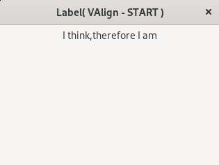
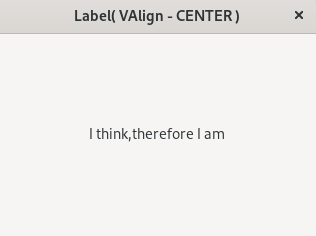
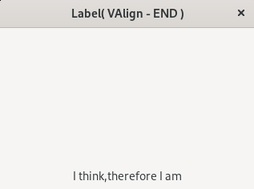

update:2024/11/8
#include <gtkmm.h>
class MyWindow : public Gtk::Window
{
public:
MyWindow();
virtual ~MyWindow() = default;
private:
Gtk::Label m_label;
};
MyWindow::MyWindow()
{
set_title("Label( VAlign - CENTER )");
set_default_size( 320, 240 );
// CENTER
m_label.set_text( "I think,therefore I am" );
m_label.set_valign( Gtk::Align::CENTER );
m_label.set_margin_top( 5 );
m_label.set_margin_bottom( 10 );
m_label.set_margin_start( 20 );
m_label.set_margin_end( 20 );
set_expand();
set_child( m_label );
}
int main(int argc, char* argv[])
{
auto app = Gtk::Application::create( "gtkmm4.example" );
return app->make_window_and_run<MyWindow>(argc, argv);
}
| Gtk::Align::SRART | Gtk::Align::CENTER | Gtk::Align::END |
|  |  |  |